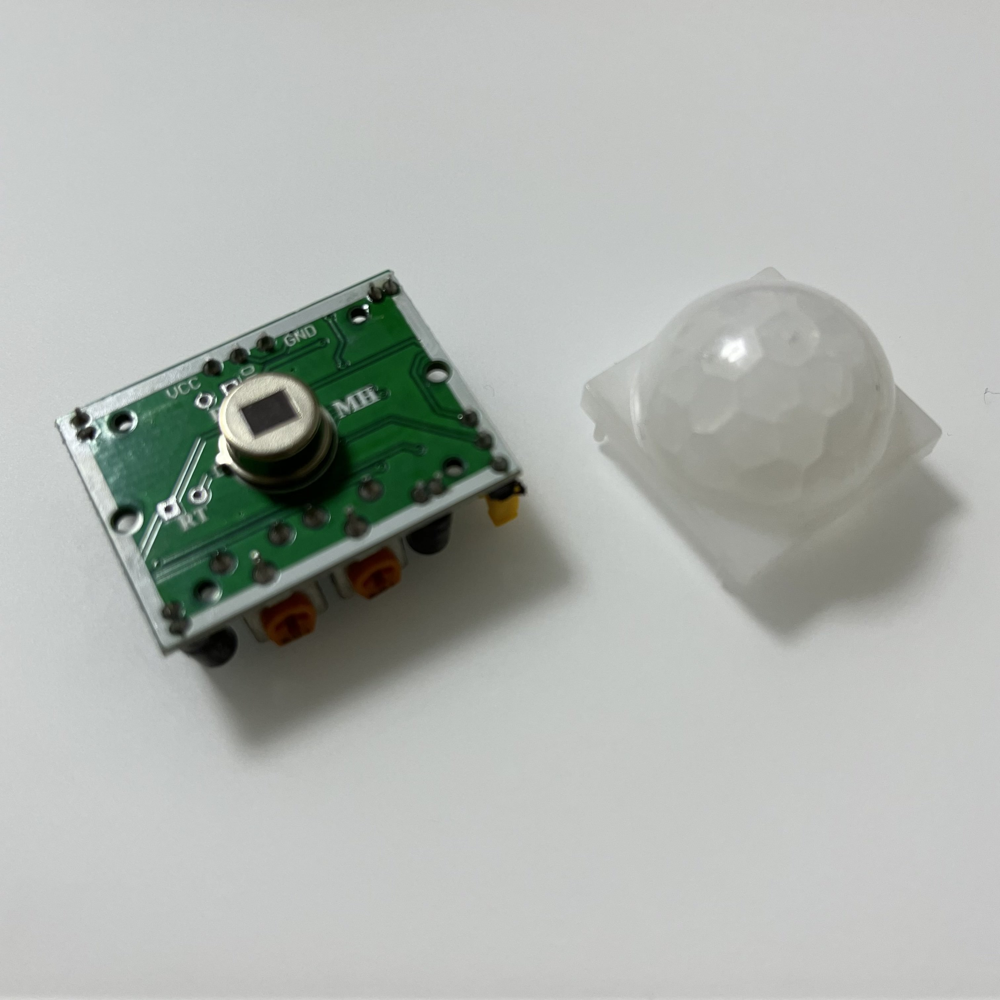

About PIR (Price Income Ratio)

인체감지센서( PIR센서 : Pyroelectric Infra Red Sensor)
일정한 적외선을 띄며 움직이는 물체가 감지되면 HIGH 신호를 아니면 LOW 신호를 출력합니다.
ex)현관이나 엘리베이터 입구에서 사람이 접근하면 자동으로 불이 켜지는 전등.
흰색 구형의 기능은 센서 표면에 적외선을 모아주며 적외선 감지 범위를 확대한다.